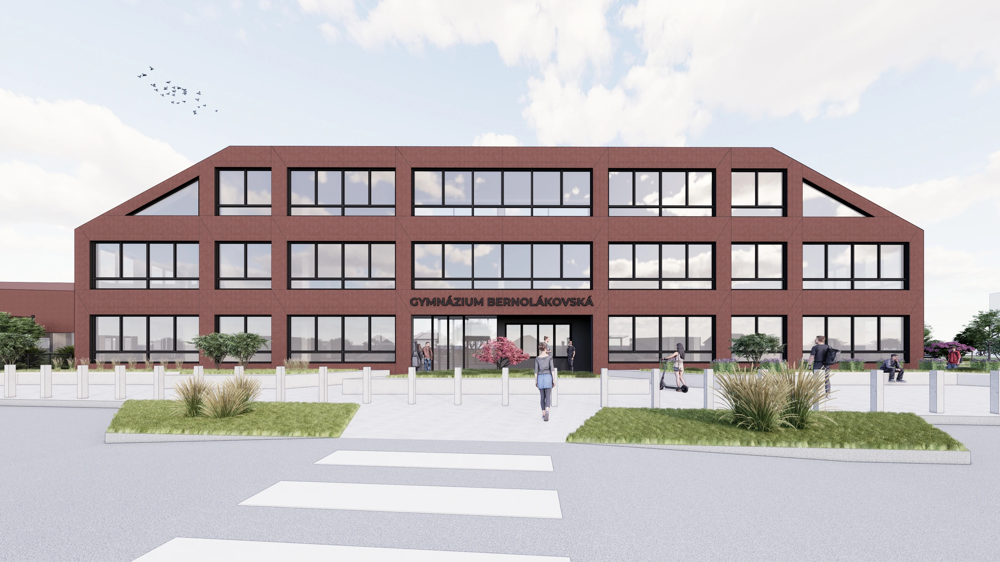
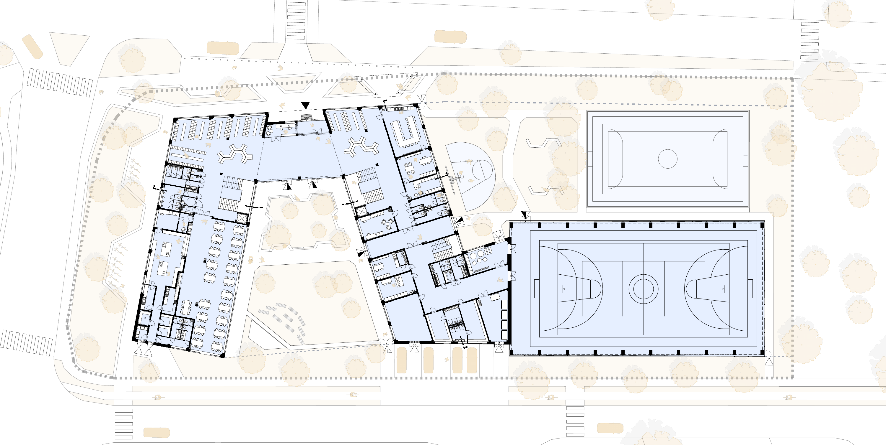
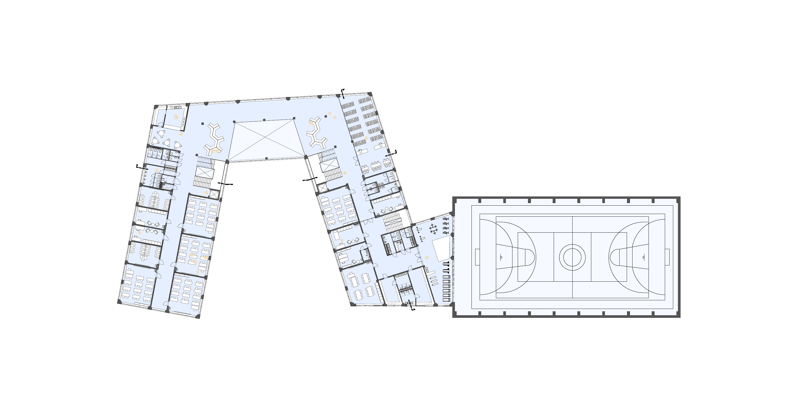
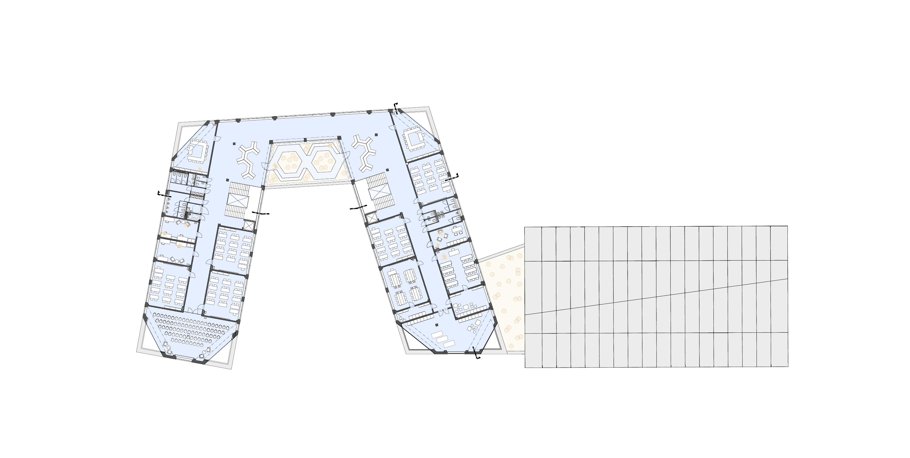
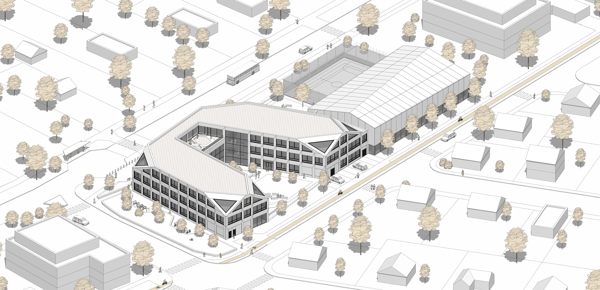
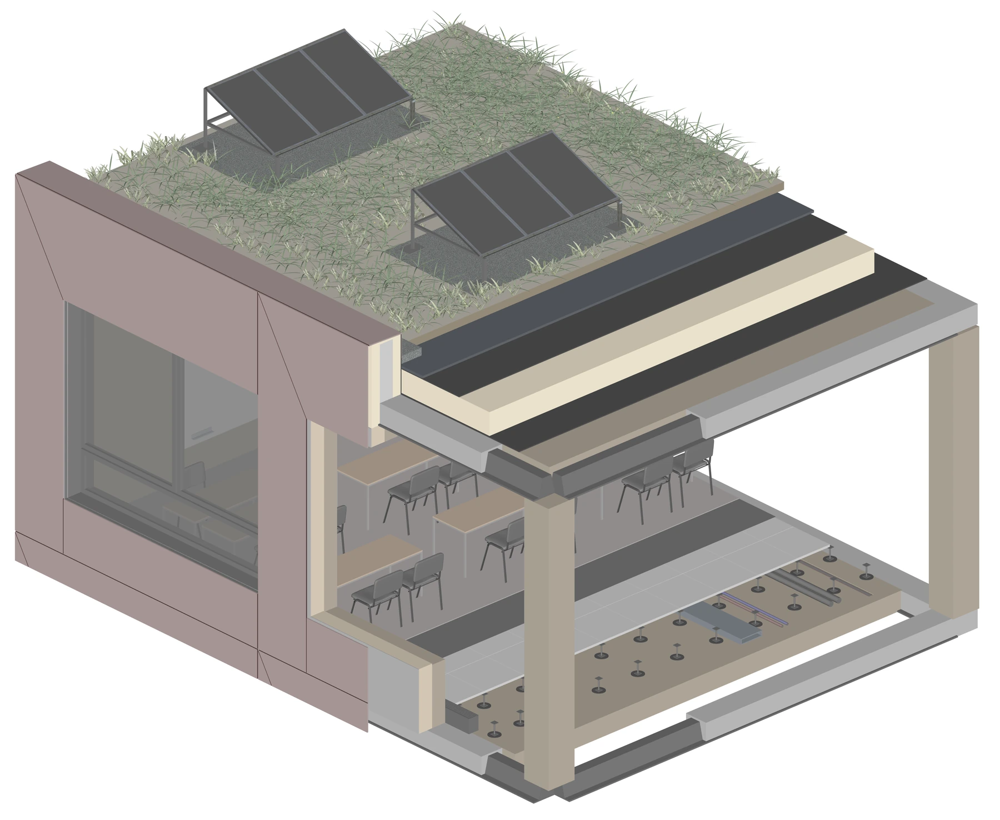
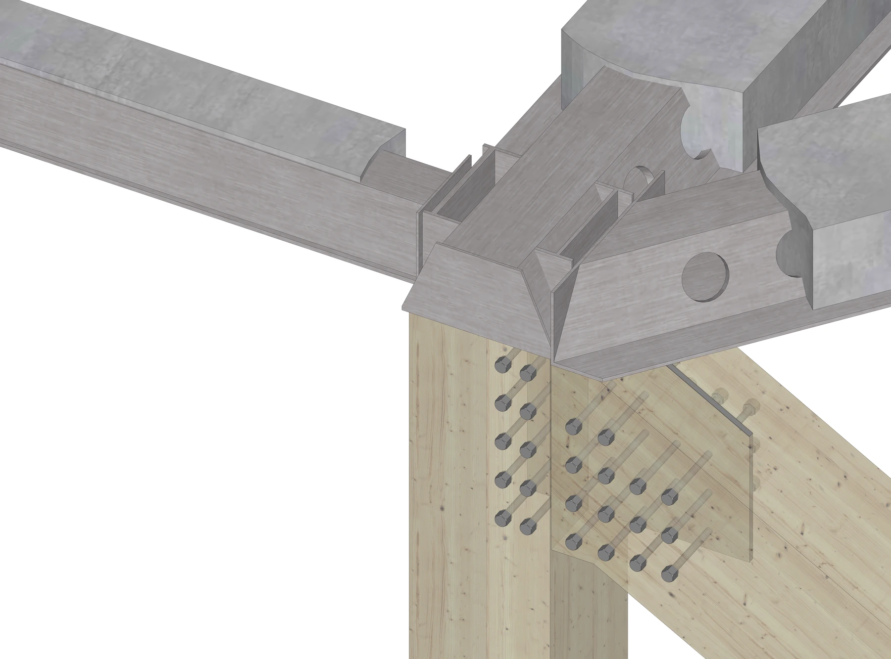

High school Bernolákovská
A proposal for a high school between Bernolákovo and Ivánka pri Dunaji. The building is organised around a courtyard, with classrooms, a library, dining spaces and a sports hall connected by open circulation and shared areas. These spaces give students places to study, meet and spend time together beyond the classroom.

Floor plans




Construction
The prefabricated structural system combines glued laminated timber (GLT) columns and roof beams, cross-laminated timber (CLT) slabs and roof panels, and Peikko DELTABEAM steel beams. Concrete is used for the staircases and lift shafts.
The construction module shows how the frame, floor and roof layers meet the façade. The structural joint detail shows the connection between the prefabricated members.
Interactive model available when JavaScript is enabled.

